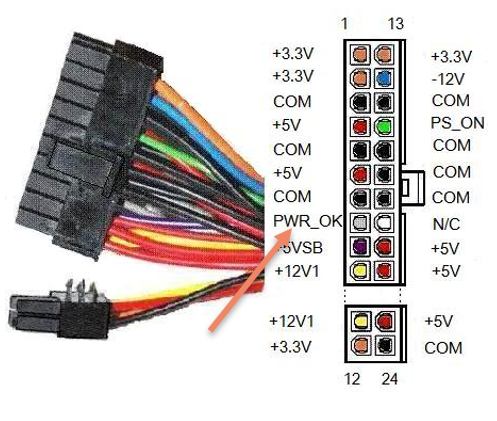

Als we de voeding net aangezet hebben dan zijn de uitgangsspanningen (12V, 5V, 3.3V) nog niet onmiddellijk beschikbaar op de uitgangen van de 24 pin connector. De spanningsniveaus verhogen gradueel tot ze hun juiste waardes aangenomen hebben. Dit duurt niet lang, zo'n 20 ms maar we willen natuurlijk niet dat onze machine onvoldoende vermogen heeft want dit zou schade kunnen veroorzaken of het opstartproces verhinderen.
Om dit te voorkomen heeft de voeding een Power Good (PWR_OK) signaal dat het moederbord laat weten dat de voltages die aangeleverd worden correct zijn en kunnen gebruikt worden om continu voldoende vermogen te leveren.

Niet enkel maar tijdens het opstarten heeft dit PWR_OK signaal zijn nut. Ook tijdens de werking van de computer is het belangrijk dat de voeding voldoende vermogen kan blijven leveren en de spanning niet teveel zakt of stijgt. We noemen dit ook wel under en overvoltage protection.